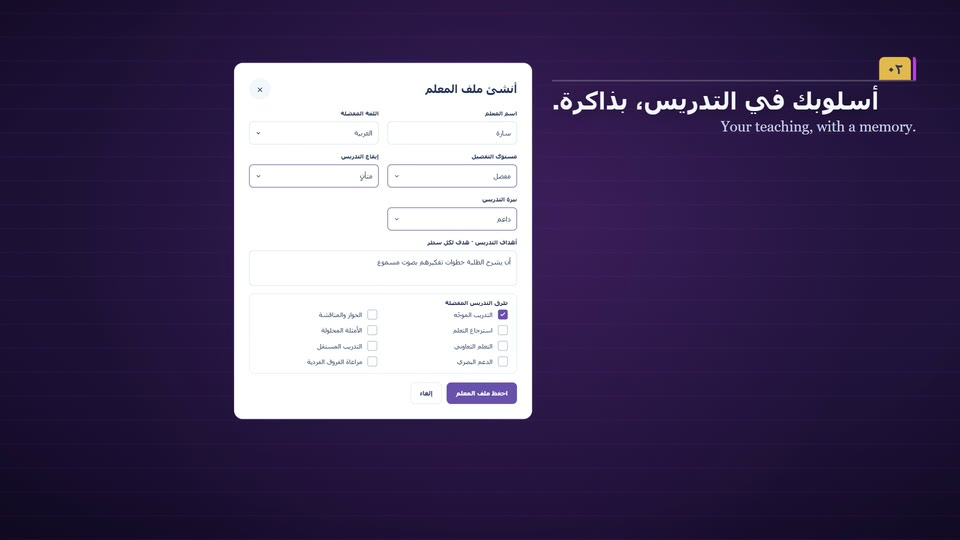
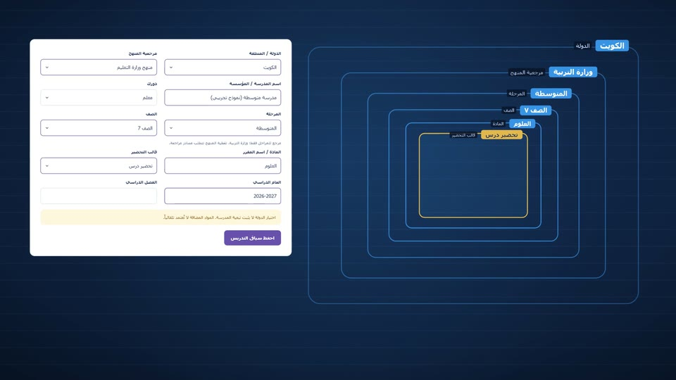
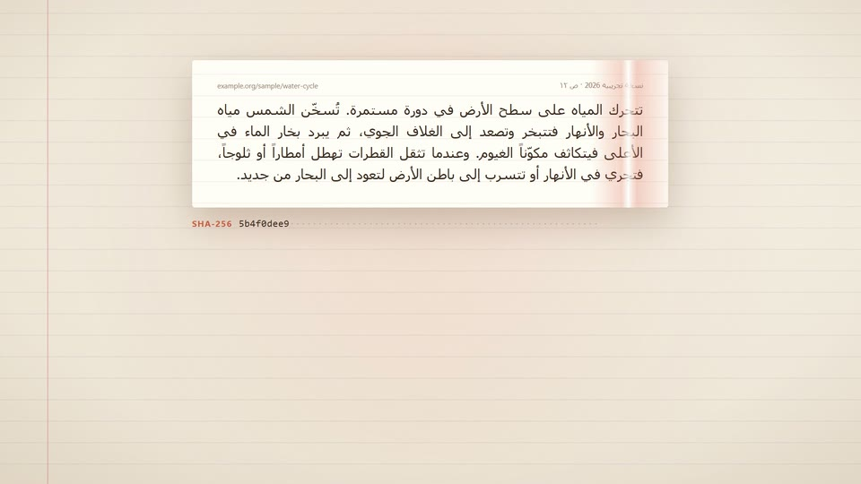
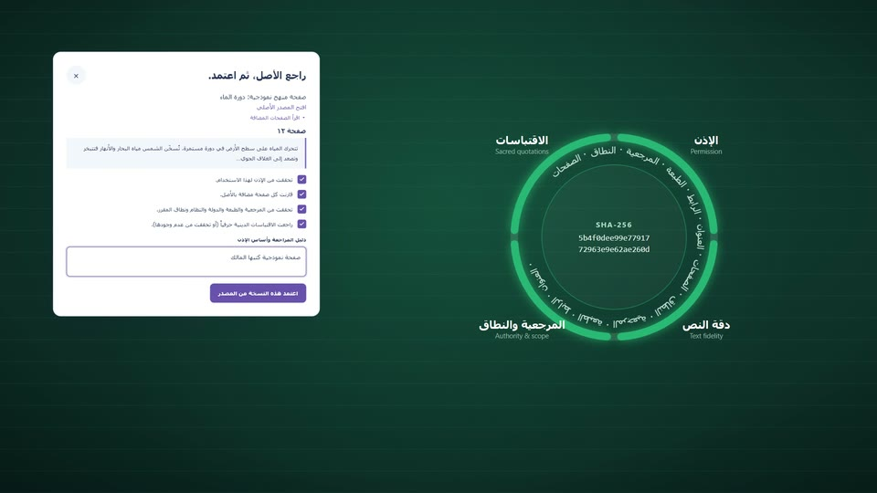
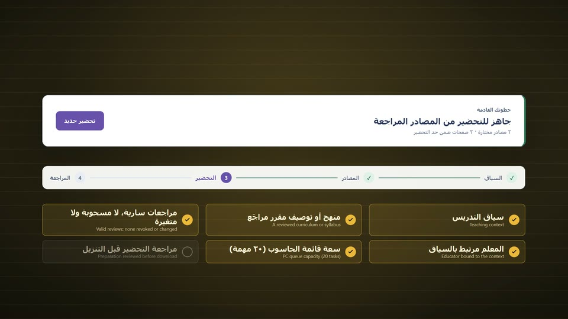
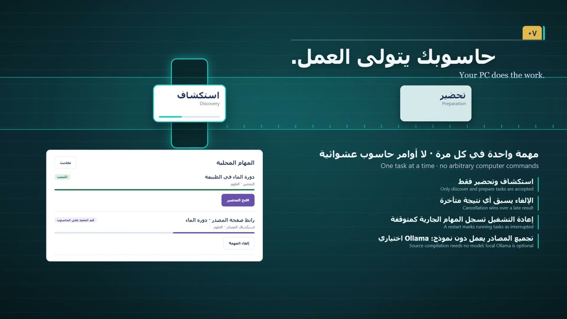
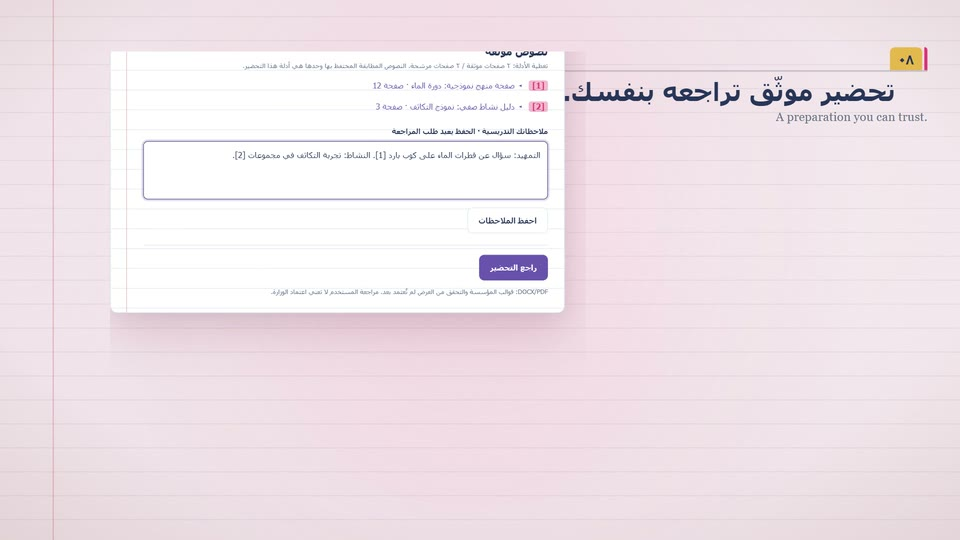
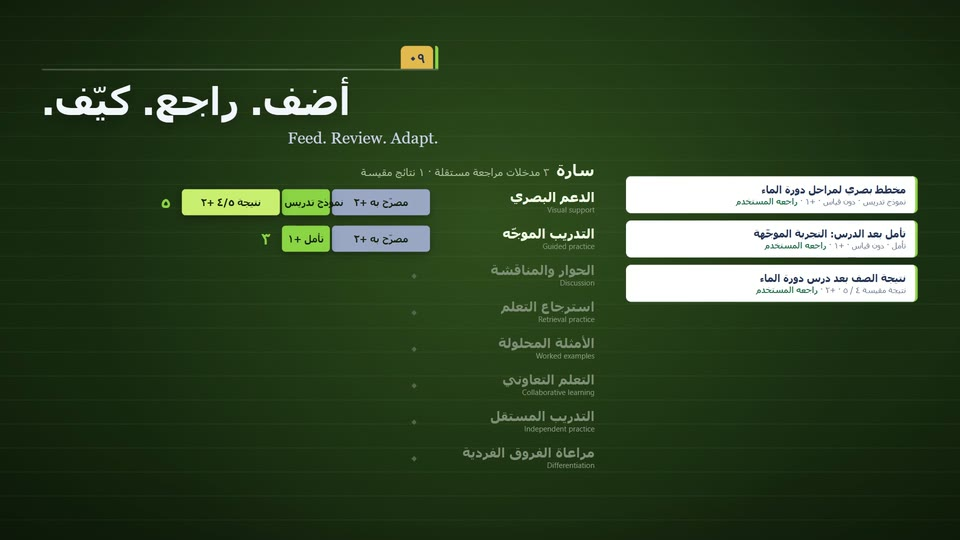
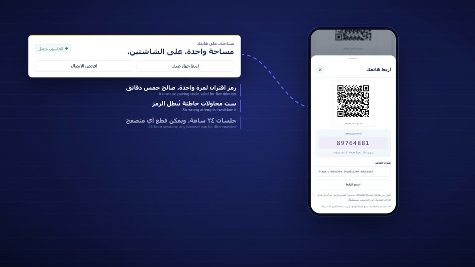
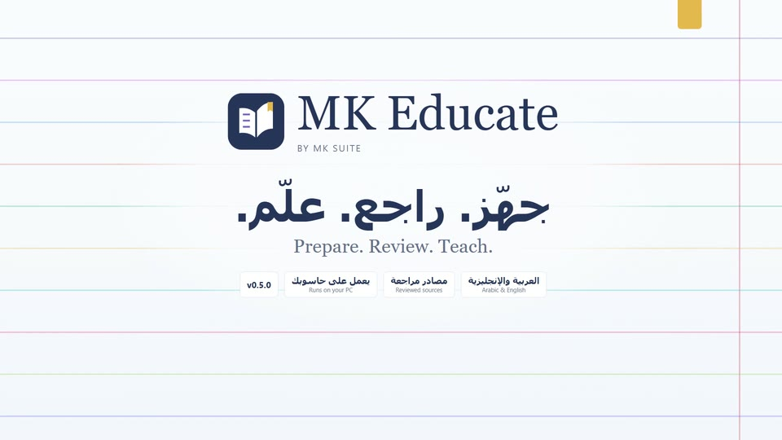

A little more room to teach.
A local teaching studio that opens in Arabic and mirrors fully into English.
A local teaching studio that opens in Arabic and mirrors fully into English.
A 150-second scroll film through MK Educate 0.5.0: educator profiles, teaching contexts, exact sources and their review, readiness, the local worker, cited preparations, calibration and the paired phone.
A local teaching studio that opens in Arabic and mirrors fully into English.

Each educator keeps a separate profile of preferences, goals, class needs and methods.

Country, authority, stage, grade, subject and template define one immutable teaching context.

Exact page text is stored with its edition, URL, role and a SHA-256 version.

Four explicit checks seal a source version before any preparation can use it.

Readiness names the next action and keeps evidence within twenty sources and pages.

One local worker runs discovery and preparation tasks, one at a time.

Template sections, cited extracts and your notes, reviewed before an HTML download.

Reviewed examples adjust method suggestions with visible, rule-based scores.

A paired phone reaches the same workspace over a private route to your PC.

MK Educate 0.5.0: Arabic and English, reviewed sources, running on your PC.